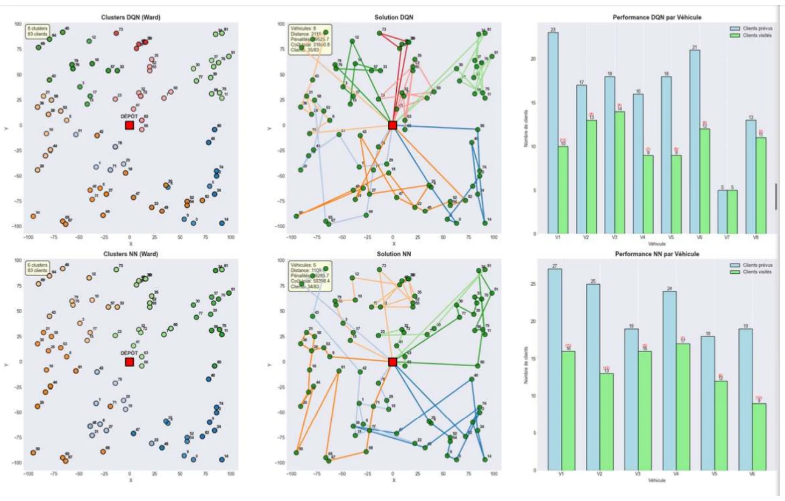
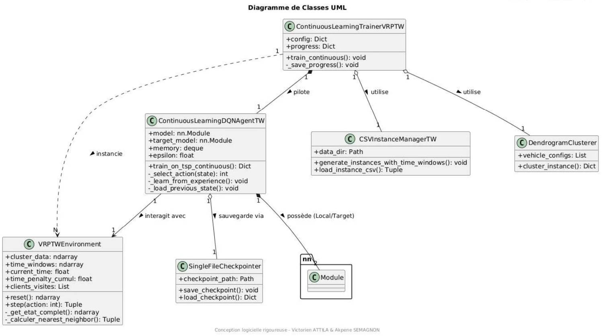
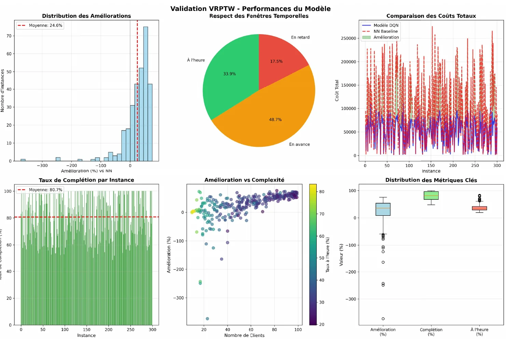
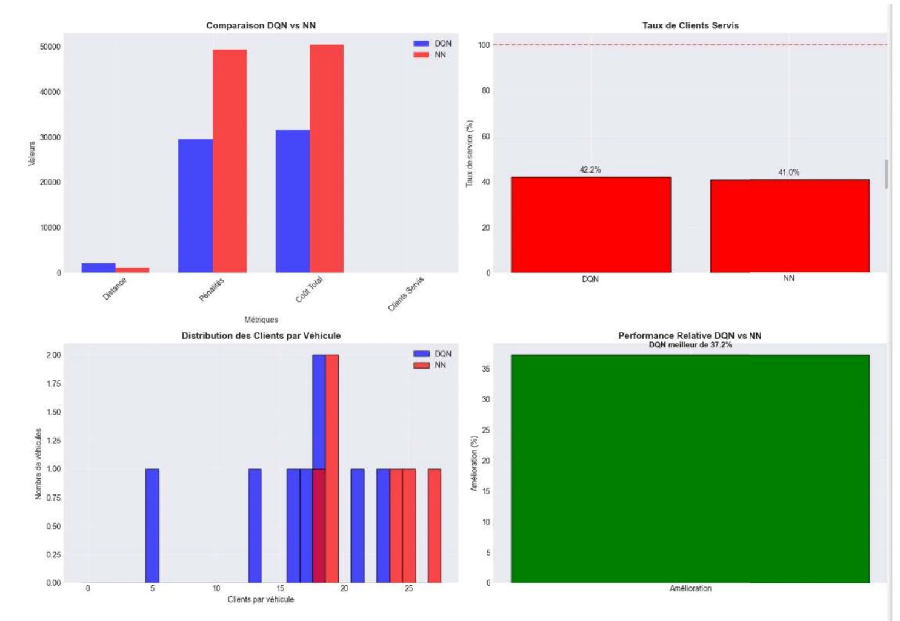
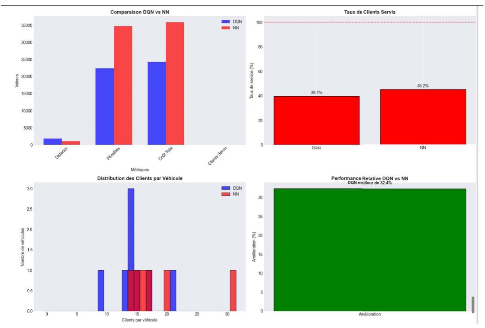
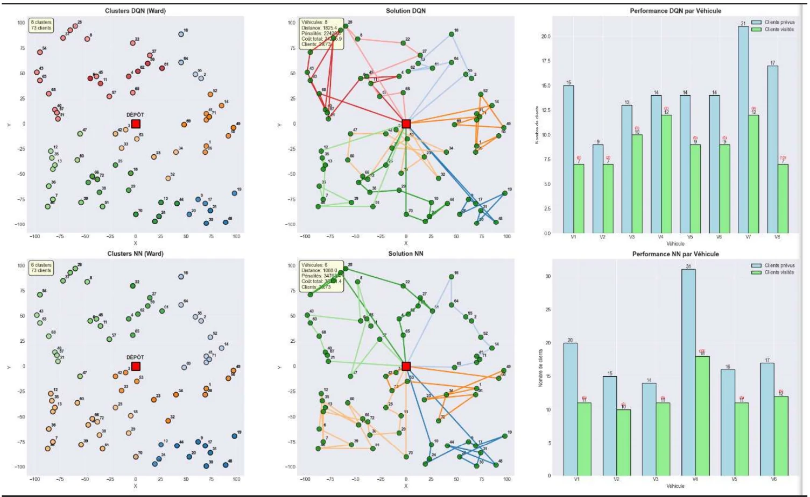

02 · Recherche en IA · UTT Troyes
TCVRP-softTW
Garantir une livraison dans des fenêtres de temps lorsque la demande est fluctuante : des tournées d'infirmières à domicile planifiées par apprentissage par renforcement.
- Rôle
- Co-autrice, avec Victorien Attila
- Encadrant
- Alexis Robbes · laboratoire LIST3N
- Construit avec
Python 3
PyTorch
- Deep Q-Learning
- Ward
- Période
- Automne 2025 · rapport du 30 décembre 2025

01 Le problème
Organiser une tournée de soins à la main, c'est choisir le patient le plus proche maintenant, et accumuler les retards en fin de journée. Ici, un retard peut toucher à la santé d'un patient.
Le TCVRP-softTW (Time Constrained Vehicle Routing Problem with soft Time Windows) étend le problème classique de tournées de véhicules : chaque patient a un créneau de passage. Le créneau est « souple » : on peut le manquer, mais avec une pénalité. Cette souplesse garantit qu'aucun patient n'est délaissé, même quand le système est surchargé.
Le vieillissement de la population fait exploser la demande de soins infirmiers à domicile. Les outils classiques ont deux défauts : ils deviennent lents quand le nombre de patients grandit, et ils manquent d'anticipation. Notre solution devait trouver le meilleur compromis entre kilomètres et ponctualité, répartir équitablement les patients par quartier, et proposer un itinéraire complet presque instantanément.
02 Comment ça marche
Le problème est décomposé en deux étages. D'abord, les patients sont répartis en secteurs, un par véhicule, par clustering hiérarchique de Ward. Ensuite, dans chaque secteur, un agent Deep Q-Learning choisit à chaque étape le prochain patient à visiter parmi ceux qui restent (exploration ε-greedy, puis exploitation du réseau).
L'agent minimise un coût global : la distance parcourue, plus une pénalité d'avance, plus une pénalité de retard dix fois plus lourde.

Trainer orchestre tout : le Clusterer sectorise, l'InstanceManager charge les patients, et l'agent DQNAgent interagit avec l'environnement de soins VRPTWEnvironment.Hyperparamètres
- Journée de travail
- 720 min
- Fenêtre de soin
- 120 min
- Temps de service
- 15 min
- Optimiseur
- Adam · lr 0,001
- Discount γ
- 0,99
- ε-greedy
- 1,0 → 0,01
- Replay buffer
- 10 000
- Batch
- 64
- Target update
- 50 épisodes
- Flotte
- 6 à 10 véhicules
03 Décisions
Les choix qui ont façonné le modèle, et pourquoi.
-
01
Apprendre à conduire avant d'apprendre l'heure
Phase 1 : l'agent apprend la navigation seule sur 1 000 instances de VRP (50 à 100 patients), chacune testée avec 5 tailles de flotte, soit des milliers de sous-problèmes. Phase 2 : on ajoute les contraintes de soins. Grâce au transfer learning, l'agent repart des poids de la phase 1 au lieu de recommencer de zéro.
-
02
Un radar à 4 quadrants pour voir autour de soi
L'état de l'agent est un vecteur de 37 dimensions. Notre innovation principale : un radar qui découpe l'espace en 4 secteurs (avant, droite, arrière, gauche). Pour chacun, 7 informations : patients visités et restants, distance au plus proche, proportion de patients où l'on arriverait trop tôt, à l'heure ou en retard, et direction du dépôt. S'y ajoutent 6 informations de base (position, progression, temps) et les distances aux 3 patients les plus proches.
- Base
- 6
- Avant · droite · arrière · gauche
- 4 × 7
- Proximité
- 3
- Total
- 37
-
03
Un retard coûte dix fois plus qu'une avance
La pénalité de retard vaut dix fois celle d'avance (β = 10α) : un retard peut être un risque pour la vie d'un patient, une avance non. La récompense compare l'agent à la solution du plus proche voisin et à une borne inférieure (l'enveloppe convexe), ce qui la rend comparable d'une instance à l'autre. Un bonus récompense chaque fois que l'agent fait mieux que la référence.
-
04
Sectoriser d'abord, optimiser ensuite
Plutôt que de demander à un seul agent de gérer toute la ville, le clustering de Ward découpe d'abord les patients en zones de quartier, une par infirmière. Chaque zone devient un problème plus petit que l'agent résout rapidement, et la charge de travail est mieux répartie.
04 Résultats
Entraînement sur 700 instances, validation sur 300, soit 1 000 instances générées aléatoirement autour d'un dépôt fixe.
Validation sur 300 instances
- amélioration moyenne du coût vs plus proche voisin
- 24,8 %
- taux de complétion moyen des tournées
- 80,7 %
- patients servis à l'heure
- 33,9 %
- arrivées en retard
- 17,5 %

Instance 1 · 83 patients
Le DQN sert légèrement plus de patients à l'heure (42,2 % contre 41,0 %) et réduit le coût total (distance + pénalités) de 37,2 %.

Instance 2 · 73 patients
Ici le plus proche voisin sert plus de patients à l'heure (45,2 % contre 39,7 %), mais le DQN reste 32,4 % moins coûteux au total.


05 Et après
L'apprentissage par renforcement profond, combiné à des techniques classiques, est une approche viable et performante pour le VRPTW, avec des applications concrètes dans les soins à domicile.
Pour un usage médical réel, il faudrait entraîner l'agent sur plusieurs milliers d'instances afin qu'il rencontre les cas limites. Quatre pistes sont ouvertes :